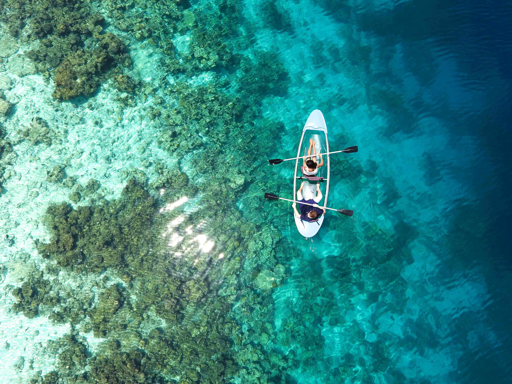
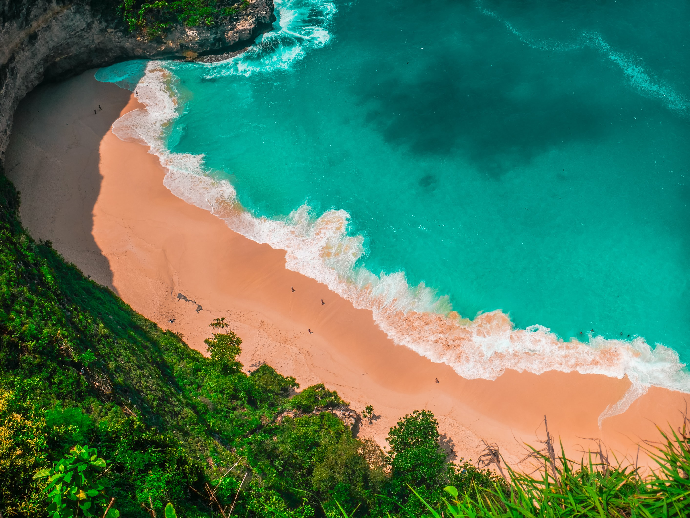
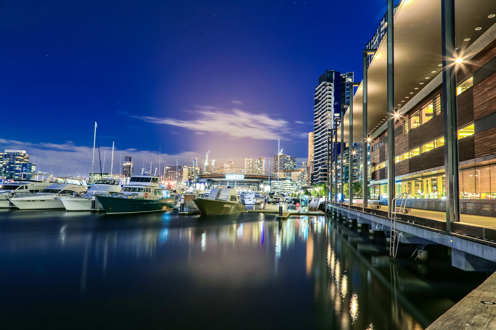
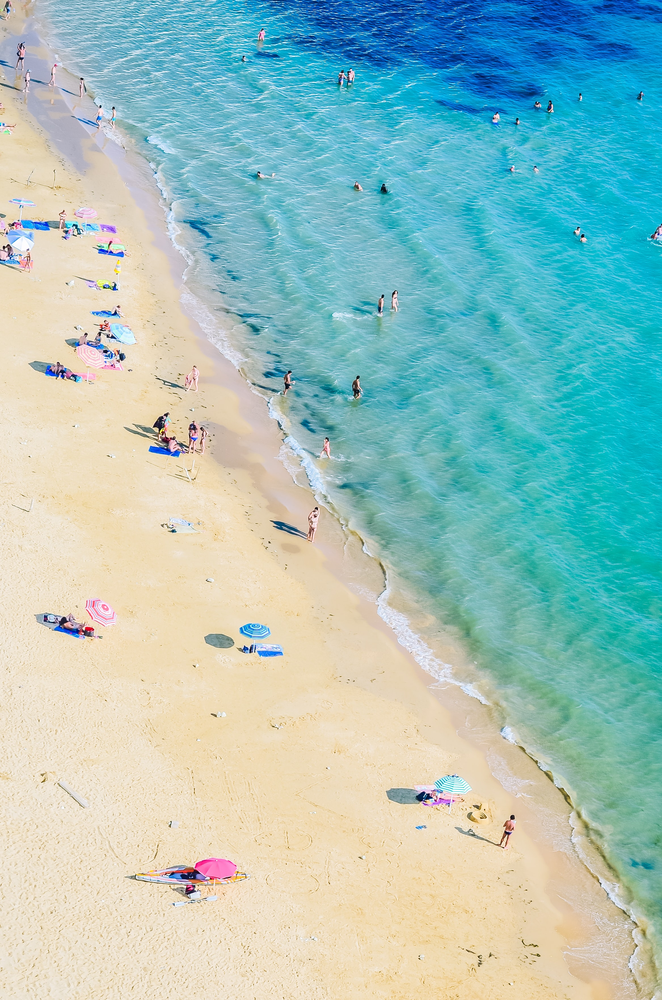
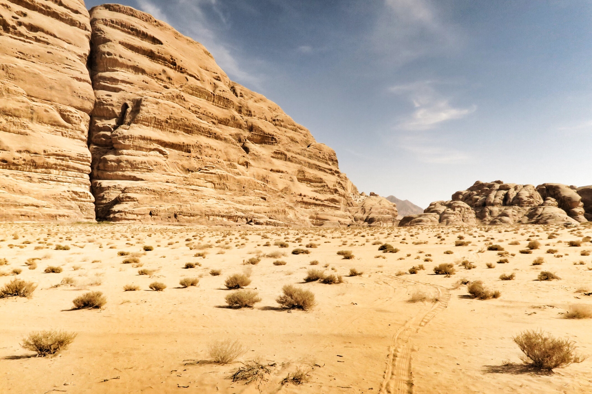
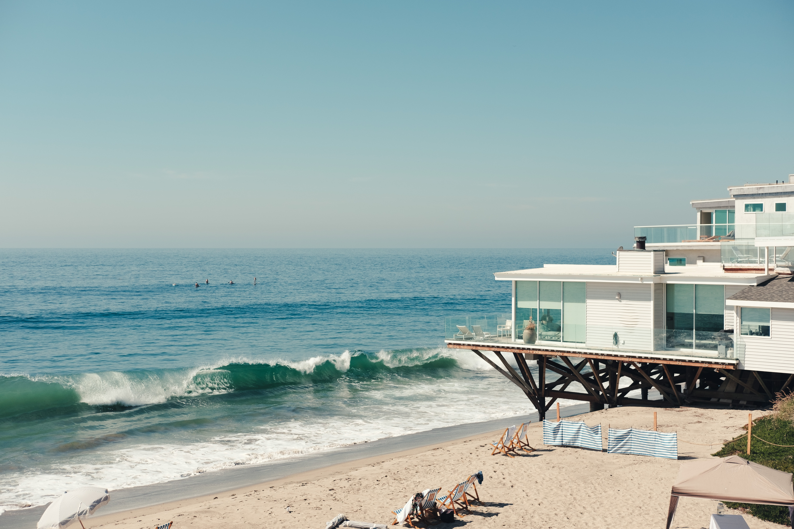
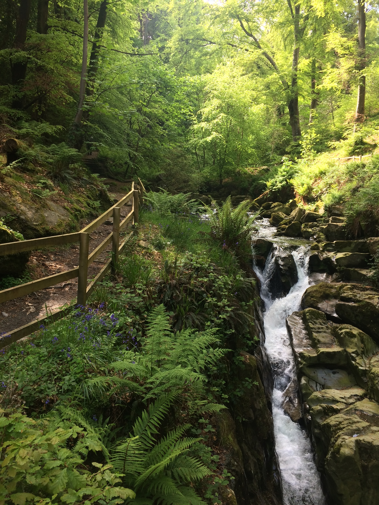

HOLIDAY
Spending quality time with your love ones and close friends,review your bonding and improve mutual understanding.

MALDIVES
The Maldives are known as "the tropcal paridise" for reasion such as its beauty.This tropical country has separated island.
BALI
Bali is a mesmerizing Indonesian island which is world famous for its beautiful places, rich culture, history, arts and crafts, gorgeous beaches, and many more things.
MARINA
Marina beach in Chennai along the Bay of Bengal is India’s longest and world’s second longest beach.
JUHU
The Juhu Beach in Mumbai is one of the most famous Indian beaches. ... Tourists visit this beach because of its peaceful atmosphere and its scenic beauty. Juhu Beach is also famous for its local delicacies and street food. The food stalls set up here offer excellent cuisines and snack items.
MUSSOORIE
Mussoorie, also known as Queen of the Hills, is among the most popular hill stations of the country.

MUNNAR
The place is also famous for its medicinal plants and herbs. Being one of the major hill stations in Kerala, Munnar is blessed with the fruits of nature. The several hills, tea plantations, National Parks, Rivers and lakes have made Munnar an essential tourist destination in India.

OOTI
Ooty is most famous for its tea plantations. Connoisseurs will find plenty to choose from: dust and leaf; black, green, black and white varieties;and flavours such as masala, jasmine, cardamom and even chocolate.

SHILLONG
Apart from the natural beauty, Shillong also acts as the gateway to Meghalaya, the state famous for heavy rainfall, caves, tallest waterfalls, beautiful landscapes and amazing people and their culture. Shillong is also fast emerging as an education hub for the entire northeastern region.
THAR DESERT
The prevailing southwest monsoon winds that bring rain to much of the subcontinent in summer tend to bypass the Thar to the east.

GOBI
The Gobi is notable in history as the location of several important cities along the Silk Road. The Gobi is a rain shadow desert, formed by the Tibetan Plateau blocking precipitation from the Indian Ocean reaching the Gobi territory.
MAHINDRA
Our souvenir shop has cute and quirky trinkets to take back home! Our plush studio rooms and suites lure you to spend the day in. And before you know it
OBEROI
Oberoi Hotels & Resorts voted World’s Best Hotel Brand for the second consecutive year by Travel + Leisure, USA, World's Best Awards, Readers' Survey 2016..

BROOKS
How many celebrities with the last name Brooks can you think of? The famous Brookses below have many different professions, including notable actors with the last name Brooks, famous musicians named Brooks, and even athletes named Brooks.
